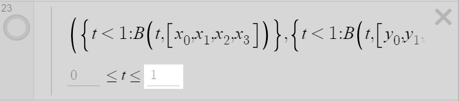
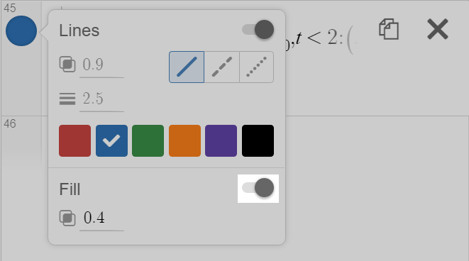

Introduction
The Desmos graphing calculator is often used to create art, in addition to graphing and visualizing numerical data. Desmos art is displayed on the website and official contests have been held. The following instructions describe one process of creating art in Desmos.
Knowledge of the basic functionality of Desmos is inferred and a strong understanding of math (up to Algebra II) is recommended. The time requirement varies with each piece (see figures 2a, 2b, and 2c), although expect about 1 hour to learn and complete this process.
Hint: Bolded keywords reveal additional information when moused over.
Table of Contents
1. Choosing a Reference
Choose and upload a reference image to Desmos.
a reference image to Desmos.
Important: The difficulty and time required greatly depend on the reference. Easier references focus on one subject with clearly defined shapes (figure 2a). More difficult references contain fine detail (figure 2b). Photo-realistic images are not recommended since shapes and colors may not have well defined borders (figure 2c).
Figure 2a: A simple image consisting of generally large shapes and no fine detail. Estimated time of completion 2+ hours.

Figure 2b: A character drawing which contains many shapes and details. Estimated time of completion 10+ hours.
Figure 2c: A real-life photo which contains high amounts of fine detail. Not recommended.
2. Planning a Reference
Designate a shape or stroke.
Add a point along the path each time one of the following situations occur:
- Start or end of stroke
- A corner
A point at which the path is not smooth (the derivative is not continuous).
- A change in characteristic
Example: A line transitioning into an arc.
- An intersection of three or more shapes
Use subscripts to name points; typing _ (underscore) allows you to enter subscript.
A sample point is provided.
- Copy-paste the following equation into Desmos:
\left(x_{0},y_{0}\right). - Click the blue all
 button which appears.
button which appears.
Tip: Add all points to a folder to keep your graph organized.
3. Building Equations
All paths can be approximated by lines and Bezier curves. Other equations may be used, but each require additional adaptation which is outside the scope of this guide. Polynomials, Splines, and Fourier Series are among the most powerful techniques to name a few.
Experiment with the following equations to see how each work. Add any new points as needed so the points added in Step 2 may remain stationary. At the bottom of Step 3, an example graph is included to see the outcome of each equation.
Lines
The parametric equation which connects two points is as follows:

Copy-paste the following latex into Desmos: \left(\left(c-a\right)t+a,\left(d-b\right)t+b\right)
- Replace the two a’s with the x-value of the starting point.
- Replace the the two b’s with the y-value of the starting point.
- Replace c with the y-value of the starting point.
- Replace d with the y-value of the starting point.
Polygons
Polgons are a fast, efficient way to draw shapes that contain no curves. In Desmos, the polygon function takes a list of x-values and a list of y-values for parameters.
Copy-paste the following latex into Desmos: \operatorname{polygon}\left(\left[\right],\left[\right]\right)
- Type the x-values of the points, seperated by commas, in the first set of square brackets.
- Type the y-values of the points, seperated by commas, in the second set of square brackets.
Important: Make sure that the order of the points between the x and y values is the same.
Bezier Curves
Beziers can be used to approximate any curve.
Copy-paste the following latex into Desmos:
B\left(t,P\right)=\sum_{i=0}^{\operatorname{length}\left(P\right)-1} \operatorname{nCr}\left(\operatorname{length}\left(P\right)-1,i\right)\left(1-t\right)^{\operatorname{length}\left(P\right)-1-i}t^{i}P\left[i+1\right]
This statement only needs to appear once on the equation list. The function will allow you to more easily draw Bezier Curves.
Copy-paste the following latex into Desmos: \left(B_{ezier}\left(t,\left[\right]\right),B_{ezier}\left(t,\left[\right]\right)\right)
- Type the x-values of the points, seperated by commas, in the first set of square brackets.
- Type the y-values of the points, seperated by commas, in the second set of square brackets.
Tip: Moving points on a Bezier curve changes the entire curve, adding more points will cause the amount of influence on sections farther away to decrease.
You can view an example of the equations here:
4. Outlining Shapes
- If the shape contains only lines, use the polygon function to draw the shape. Otherwise, proceed with the following steps.
- Designate a starting point on the shape or stroke.
- If the current shape borders another previously drawn shape, proceed in the opposite direction. (If you drew the previous shape in the clockwise direction, draw the new shape in the counter-clockwise direction and vice versa.)
- Identify the next point in the sequence.
- Draw the appropriate line or curve to the next point.
- If the line or curve already exists, copy and paste the previous equation.
- Then if the previous line or curve was not drawn in the opposite direction, reverse the order of the points in the equation.
- Repeat steps 4-7 until the entire shape or stroke is drawn.
For each point, if all the shapes which use that point have been drawn, lock the value in place.
- Copy the x-value of the point.
- Paste the value wherever the x-variable appears (i.e. x₀ becomes 3.5).
- Copy the y-value of the point.
- Paste the value wherever the y-variable appears (i.e. y₀ becomes -2.8).
Repeat sections 2 (Planning a Reference) and 4 (Outlining Shapes) for the remaining shapes and arcs in the reference image.
5. Filling and Coloring
Desmos supports two main color models: RGB and HSV.
See Desmos Help for more information on creating colors.
To fill in shapes, we need to turn the lines and arcs into piecewise functions.
- Designate a shape.
- Copy-paste the following latex into Desmos:
\left(\left\{t<1:\right\},\left\{t<1:\right\}\right) - Designate a starting line or curve.
- Copy the x-component of line or curve into the equation from Step 2 after the first colon.
- Copy the y-component of line or curve into the equation from Step 2 after the second colon. (At this point, your line or arc should appear.)
- Count the number of lines and curves in the shape.
- Set the maximum of the domain of t to the number of lines and curves.
- Type
,t<2:after the copied equation from Step 4. - Copy the x-component of the next line or curve after the colon from the previous step.
- Identify all occurence of t introduced by the previous step.
- Replace the occurences with
\left(t-1\right). - Type
,t<2:after the copied equation from Step 5. - Copy the y-component of the next line or curve after the colon from the previous step.
- Identify all occurence of t introduced by the previous step.
- Replace the occurences with
\left(t-1\right). - If you shape contains more equations, repeat steps 8-15 with the following modifications.
- Increment the 2 in Steps 8 and 12 by one each time.
- Increment the 1 in Steps 11 and 15 by one each time.
- Enable fill for the shape.
Repeat the above process for each shape.
You can view a completed piecewise function here: